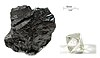

carbon
matter

Source: Wikipedia
Wikipedia Page (Something wrong with this association? Let us know.)
Wikidata Page (Something wrong with this association? Let us know.)
Occurs in:
- atmosphere_air_nmvoc~anthropogenic_carbon__molar_concentration
- atmosphere_air_nmvoc~biogenic_carbon__molar_concentration
- carbon_isotope_neutron__neutron_number
- sea_water_diatoms-as-carbon__mass_concentration
- water~liquid_carbon~dissolved~inorganic__molar_concentration
- water~liquid_carbon~dissolved~organic__molar_concentration
- crop_biomass~microbial-and-soil_decomposition_carbon_respiration__mass
- biomass~microbial-and-soil~stabilized_decomposition_carbon_respiration__mass_rate
- soil_carbon_pool~stabilized_carbon__one-year_change_of_mass
- soil_carbon_pool~stabilized_carbon__year-end_mass
- soil_carbon_pool~stabilized_carbon__year-start_mass
- soil_carbon_pool~stabilized_carbon__final_mass
- soil_carbon_pool~stabilized_carbon__change_of_mass
- soil_carbon_pool~stabilized_carbon__initial_mass
- soil_layer_carbon~stabilized__mass_fraction
- soil_layer_matter~organic~stabilized_carbon__mass_fraction
- soil_carbon_pool~microbial-and-stabilized_carbon~decomposed_addition__mass_rate
- crop_residue_decomposition_pool_carbon_respiration__time_integral_of_mass_flux
- crop_residue_pool_root-and-rhizodeposit-as-carbon_decomposition__one-year_time_integral_of_mass_flux
- above-ground_crop_residue-as-carbon_decomposition__mass
- above-ground_crop_roots-and-rhizodeposits-as-carbon_decomposition__mass
- above-ground_crop_residue_pool-as-carbon_decomposition__one-year_time_integral_of_mass_flux
- soil_pool~stabilized_carbon__change_of_mass
- soil_pool-and-pool~microbial_carbon~decomposed_addition__mass
- soil_surface_residue~standing_carbon_nitrogen__mass_ratio